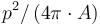
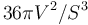
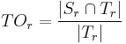
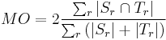
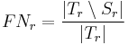
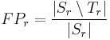

MorphoLibJ
| MorphoLibJ (IJPB-plugins) | |
|---|---|
| Author | David Legland, Ignacio Arganda-Carreras |
| Update site | IJPB-plugins |
| Maintainer | David Legland, Ignacio Arganda-Carreras |
| Source | on GitHub |
| Initial release | July 3rd, 2014 |
| Latest version | July 23rd, 2019 (MorphoLibJ v1.4.1) |
| Development status | stable, active |
| Category | Analysis, Filtering, Segmentation, Mathematical morphology |
MorphoLibJ is a collection of mathematical morphology methods and plugins for ImageJ, created at INRA-IJPB Modeling and Digital Imaging lab.
The library implements several functionalities that were missing in ImageJ, and that were not or only partially covered by other plugins. Namely:
- Morphological filtering for 2D/3D and binary or grey level images: erosion & dilation, closing & opening, morphological gradient & Laplacian, top-hat...
- Morphological reconstruction, for 2D/3D and binary or grey level images, allowing fast detection of regional or extended extrema, removing of borders, hole filling, attribute filtering...
- Watershed segmentation + GUI, making it possible to segment 2D/3D images of (for instance) cell tissues.
- 2D/3D measurements: photometric (intensity) and morphometric measurements such as volume, surface area, inertia ellipse/ellipsoid...
- Binary / label images utilities for removing or keeping largest connected component, perform size opening, fill holes, kill borders...
Contents
- 1 Morphological filters
- 2 Connected components operators
- 3 Watershed segmentation
- 4 Measurements
- 5 Binary and label image utilities
- 6 Library interoperability
- 7 Documentation
- 8 Installation
- 9 Citation
- 10 References
- 11 License
Morphological filters
Morphological filters are very common filters that can be combined together to provide a large variety of solutions. They are local filters, in the sense that they consider the neighborhood of each pixel/voxel.
Morphological filters are defined according to a structuring element of a given size and shape. Common structuring element include squares, discrete disks and octogons. Linear structuring element of various orientations may also be used to assess local orientation of the structures.
Principles
The original idea was to define a methodology to describe shapes by using another shape as test probe (Serra, 1982[1]; Serra et al., 1992[2]). The most basic morphological filters are the morphological dilation and the morphological erosion. The principle of morphological dilation is to test for each point of the plane, if the structuring element centered on this point intersects the structure of interest (see figure below). It results in a set larger than the original set. The principle of morphological erosion is to test for each point of the plane if the structuring element centred on this point is contained within the original set. It results in a set smaller than original set.

Morphological dilation and erosion change the size and the resulting set. It may also change its topology: after a dilation, components may merge and holes be filled. After an erosion, components may disappear, or components be separated into several parts.
Grayscale morphological filters
Grayscale erosion and dilation
Morphological erosion and dilation may also be applied on grayscale images. In that case, the morphological dilation computes for each pixel the maximum within its neighborhood (defined by the structuring element), whereas the morphological erosion considers the minimum value within the neighborhood.

Applying a dilation or an erosion changes the size of the structures in the image: the grains in the result of the dilated image are larger. Morphological erosion can also be used on binary images to help separating touching particles.
Opening and closing
Morphological dilation and erosion are often used in combination. For example, the result of a dilation followed by an erosion is called a morphological closing, and removes dark structures smaller than the structuring element. It can also connect bright structures that were separated by a thin dark space.
In a symmetric way, the result of an erosion followed by a dilation is called a morphological opening, and removes bright structures smaller than the structuring element.

Note that even if opening and closing better preserve the size of the structures in the original image, the shape is slightly altered. For example, the result of morphological closing on the figure above creates artificial connections between grains. Choosing the best size for the structuring element is often a compromise between noise removal and preservation of structure shape.
Morphological gradients
More complicated combinations of elementary operations can be used. The morphological gradient, computed as the difference of the result of a morphological dilation with the result of a morphological erosion, reveals the boundaries of the structures within the image. The morphological Laplacian is defined as half the sum of a morphological dilation and a morphological erosion with the same structuring element, minus the original image. It results in enhancing the edges of the image.
Top-hats
The white top-hat first computes a morphological opening (resulting in removing bright structures smaller than structuring elements), and removes the result from the original image. When applied with a large structuring element, the result is an homogenization of the background, making bright structures easier to segment. Similarly, the dark top-hat can be used to enhance dark structures observed on an non-homogeneous background.

Directional filters
For images containing very thin curvilinear structures (for example blood vessels, cell wall sections...), the application of common filters may be difficult due to the small size of the structures. Even for small structuring elements, the application of a morphological opening or closing let the structure disappear. Moreover, it may be difficult to preserve the whole thickness of the structure.

An alternative is to apply directional filtering. The principle is to consider an oriented structuring element such as a line segment of a given length, and to perform morphological operations for various orientations of the structuring element (Soille et al., 2001[3]; Heneghan et al., 2002[4]; Hendriks et al., 2003[5]). For example, applying a median filter or a morphological opening with horizontal direction results in the enhancement of horizontal parts of bright structures. Similarly, using a vertical structuring element results in the enhancement of the vertical portions of the structures.

The results of oriented filters for each direction can be combined by computing the maximum value over all orientations. The figure above shows the results obtained when combining two or four directions. Here, 32 orientations of line with length 25 were used. This results in the enhancement of the image while preserving the thickness of the bright structures.
Similar results may be obtained for enhancing dark curvilinear structures, by using morphological closing or median filters, and combining the results by computing the minimum over all directions.
Plugin Usage

The collection of morphological filters is available in the Plugins › MorphoLibJ menu. Filters are implemented both for 2D and 3D images, and work for binary, gray level or color (RGB) images.
Planar images
Morphological filters for planar images are available Plugins › MorphoLibJ › Morphological filters. The dialog let the user choose the structuring element shape, radius, and eventually preview the result. The following list of operations can be chosen:
- erosion keeps the minimum value within the neighborhood defined by the structuring element.
- dilation keeps the maximum value within the neighborhood defined by the structuring element.
- closing consists in the succession of a dilation with an erosion. Morphological closing makes dark structures smaller than the structuring element disappear.
- opening consists in the succession of an erosion with a dilation. Morphological opening makes bright structures smaller than the structuring element disappear.
- morphological gradient is defined as the difference of a morphological dilation and a morphological erosion with the same structuring element, and enhances edges of the original images.
- morphological Laplacian is defined as half the sum of a morphological dilation and a morphological erosion with the same structuring element, minus the original image, and enhances edges of the image.
- black top-hat consists in subtracting the original image from the result of a morphological closing, and results in the enhancement of dark structures smaller than structuring element.
- white top-hat consists in subtracting the result of a morphological opening from the original image, and results in the enhancement of bright structures smaller than structuring element.
The following structuring elements can be used for 2D images:
- disk
- square
- octagon
- diamond
- line with angle of 0, 90, 45 or 135 degrees
3D images
Morphological filters for 3D images are available under Plugins › MorphoLibJ › Morphological filters (3D). The dialog let the user choose the structuring element shape and radius. The same list of operations as for planar images is provided. Planar structuring elements can be used (the operation is simply repeated on each slice), as well as a cubic or spherical structuring element. For most structuring elements, the size can be chosen for each direction.
Directional Filters
Directional filtering is available from Plugins › MorphoLibJ › Directional Filtering. It requires a planar image.
The parameters are:
- Type: to specify how to combine the results for each oriented filter
- Operation: the operation to apply using each oriented structuring element
- Line Length: the approximated length of the structuring element.
- Direction Number: the number of oriented structuring elements to consider. To be increased if the length of line is large.
Connected components operators
The “classical” morphological filters presented in the previous section transform an input image by using the values of pixels or voxels located in a close neighborhood, defined by the structuring element. Such filters can be seen as “local”, as the result in a given position does not depend on image values located at a sufficient distance.
Connected components operators are more general as they propagate information within the image based on connectivity between pixels or voxels. More details can be found in the review of Breen et al. (1996)[6]. Connected components operators encompass powerful operators, such as morphological reconstruction that allows to reconstruct a marker image by constraining it to a mask. An extension of morphological reconstruction is the detection of extended minima and maxima, that can be useful as marker detection for segmentation. Finally, attribute opening and filtering algorithms can filter images based on size or range properties, with better preservation of edges than classical filtering.
Morphological reconstruction
The morphological reconstruction is at the basis of many useful algorithms, such as border removing, hole filling, or detection of regional minima or maxima in grayscale images.
Principle
The principle of geodesic reconstruction is to repeat conditional dilations or erosions until idempotence. Conditional dilation is the result of a dilation, combined with a mask image using a logical operation. Conditional dilations are repeated until no more modification occur (idempotence condition).
The following figure shows several steps of a geodesic reconstruction by dilation on a pair of binary images. The mask image is shown in gray, and the marker image is shown in black on the first image. The reconstructed images at each step are shown in black. The markers propagates within the mask until they fill the chosen regions.

Applications to binary images
By choosing the marker image, several operations may be automatized. For example, computing geodesic reconstruction with image of borders, and combining with original image will remove particles or regions touching the borders. In a similar way, computing geodesic reconstruction by using the border of the complement of the image makes it possible to fill holes that may appear in particles.

Applications to grey level images
Geodesic reconstructions can be applied to grey level images. By manually choosing binary markers such that they overlay specific structures, and after applying a geodesic reconstruction by dilation, it is possible to obtain a grey level image containing only the chosen structures. The border kill operation can also be applied on grey level images, making possible to rapidly remove structures touching the image borders.

Usage
The geodesic reconstruction algorithm is often used within other operators. In MorphoLibJ, it is however provided as a plugin to allow its inclusion in user-designed macros or plugins:
- Geodesic Reconstruction: compute the geodesic reconstruction by erosion or dilation using a marker image and a mask image, and a specified connectivity.
- Interactive Geodesic Reconstruction: compute the geodesic reconstruction by erosion or dilation taking the current 2D image as mask image, creating the marker image out of user-defined ROIs (for example with the point selection tool).and using a specified connectivity. The plugin allows previewing the result.
- Geodesic Reconstruction 3D: compute the geodesic reconstruction by erosion or dilation on a 3D image.
- Interactive Geodesic Reconstruction 3D: compute the geodesic reconstruction by erosion or dilation on using the current 3D image as mask and creating the marker image from the user-defined point selections.
The kill borders and fill holes operations are also provided as plugins. Both work for 2D and 3D images of 8, 16 or 32 bits.
- Kill Borders: remove the particles touching the border of a binary or grayscale image.
- Fill Holes remove holes inside particles in binary images, or remove dark regions surrounded by bright crests in grayscale images.
Regional and extended extrema
Regional minima are defined as connected regions of elements (pixels or voxels) with the same value, and whose neighboring elements all have values greater than that of the region. Similarly, regional maxima are regions of connected pixels or voxels with same value, whose neighbors all have smaller value.
One problem arising with regional minima or maxima is that they are very sensitive to noise. It is often more convenient to use so-called extended extrema. The principle is to define a tolerance value for filtering the extrema. For example, extended maxima are defined as a connected region containing elements such that the difference of the value of each element within the region with the maximal value within the region is lower than the tolerance, and such that the neighbors of the regions all have values smaller than the maximum within the region minus the tolerance. This definition allows the identification of larger extrema, that better takes into account the noise within the image. The extended minima are defined in a similar way, and are efficiently used as pre-processing step for watershed segmentation.
Both extended maxima and minima are computed using the geodesic reconstruction algorithm. More details can be found in the book of Soille (2003).

The following operations are available in the Plugins › MorphoLibJ menu:
- Regional Min / Max: compute regional minima or extrema in grey level or binary image, with specified connectivity.
- Regional Min / Max 3D: compute regional minima or extrema in 3D grey level or binary image, with specified connectivity.
- Extended Min / Max: compute extended minima or extrema in grey level image, with specified connectivity.
- Extended Min / Max 3D: compute extended minima or extrema in 3D grey level or binary image, with specified connectivity.
- Impose Min / Max: impose minima or maxima on a grey level image.
- Impose Min / Max 3D: impose minima or maxima on a 3D grey level image.
Attribute filtering
Attribute filters aim at removing components of an image based on a certain size criterion, rather than on intensity. The most common and useful criterion is the number of pixels/voxels (i.e., the area or volume). For example, a morphological size opening operation with a threshold value of 20 will remove all blobs containing fewer than 20 voxels. The length of the diagonal of the bounding box can also be of interest to discriminate elongated versus round component shapes.
Application to binary images
When applied to a binary image, attribute opening consists in identifying each connected component, computing the attribute measurement of each component, and retain only the connected components whose measurement is above a specified value. This kind of processing is often used to clean-up segmentation results.
Application to grayscale images
When applied to a grayscale image, attribute opening consists in generating a series of binary images by thresholding at each distinct gray level in the image. The binary attribute opening described above is then applied independently to each binary image and the grayscale output is computed as the union of the binary results. The final output is a grayscale image whose bright structures with the attribute below a given value have disappeared. A great advantage of this filter is that the contours of the structures area better preserved than opening with a structuring element.

As for classical morphological filters, grayscale attribute closing or tophat can be defined. Grayscale attribute closing consists in removing dark connected components whose size is smaller than a specified value. White [resp. Black] Attribute Top-Hat considers the difference of the attribute opening [resp. closing] with the original image, and can help identifying bright [resp. dark] structures with small size.
Usage
So far, the following attribute filtering plugins are available within MorphoLibJ (under Plugins › MorphoLibJ):
- Gray Scale Attribute Filtering: opens a dialog to perform between attribute opening, closing, and black or white top-hat on a planar (2D) grayscale image. Two size criteria can be used: the area (number of pixels), or the diameter (length of the diagonal of the bounding box).
- Gray Scale Attribute Filtering 3D: opens a dialog to perform between attribute opening, closing, and black or white top-hat on a 3D grayscale image. The size criterion is the number of voxels.
Watershed segmentation
The watershed algorithm assimilates the grey level image to a digital elevation model, and aims at detecting the different catchment basins. In the grey-level image, the catchment basins correspond to dark regions surrounded by bright structures (the "crests"). It is a very popular technique specially used to segment touching objects. The MorphoLibJ suite contains several implementations of the algorithm and plugins that make use of it:
- Classic Watershed, plugin implementing the original watershed algorithm by Pierre Soille and Luc M. Vincent (1990)[7] to segment 2D/3D grayscale images.
- Marker-controlled Watershed, a plugin to perform watershed in 2D/3D images by flooding from specific seed points or markers by Meyer and Beucher (1990)[8].
- Interactive Marker-controlled Watershed, a plugin to perform watershed in 2D/3D images by flooding from specific seed points or markers introduced interactively by the user.
- Morphological Segmentation, a plugin with a graphical user interface to segment 2D/3D images based on morphological operations and the watershed algorithm.
- Distance Transform Watershed, two plugins (2D and 3D) that work on binary images and allow to separate touching objects by combining the distance transform and watershed methods.
Measurements
MorphoLibJ contains several tools for quantifying the size, the shape, or the spatial organization, from binary or label 2D and 3D images. The aim is to facilitate the management of label images, contrary to the built-in “Analyze Particles...” function that operates directly on a grayscale image.
Region analysis
This section describes the methods implemented in MorphoLibJ for describing individual regions, represented as label images (one label for each region). We first define and describe the implemented features, then we present the plugins that integrate them.
Intrinsic volumes

For 3D particles, intrinsic volumes correspond to the volume, the surface area, the mean breadth (a quantity proportional to the integral of the mean curvature over the surface) and the Euler number. In 3D the Euler number equals the number of connected components minus the number of "handles" or "tunnels" through the structure, plus the number of bubbles within the particles (Serra, 1982[1]; Ohser et al., 2009[9]).
Estimation from 2D or 3D images
In image analysis, the estimation of area of 2D particles and of volume of 3D particles simply consists in counting the number of pixels or voxels that constitute it, weighted by the area of an individual pixel or the volume of an individual voxel.
The implemented method for perimeter measurement aims at providing a better estimate of the perimeter than traditional boundary pixel count. The principle is to consider a set of lines with various orientations, and to count the number of intersections with the region(s) of interest (see figure on the right). The number of intersections is proportional to the perimeter (Serra, 1982[1]; Legland et al., 2007[10]; Ohser et al., 2009[9]). By averaging over all possible directions, the estimate is unbiased.
Perimeter can be estimated using either two directions (horizontal and vertical), or four directions (by adding the diagonals). Restricting the number of directions introduces an estimation bias, with known theoretical bounds (Moran, 1966[11]; Legland et al., 2007[10]), that is usually better than boundary pixel count (Lehmann et al., 2012[12]).
The estimation of surface area follows the same principle. The number of directions is typically chosen equal to 3 (the three main axes in image), or 13 (by considering also diagonals). As for perimeter estimation, surface area estimation in usually biased, but is usually more precise than measuring the surface area of the polygonal mesh reconstructed from binary images (Lehmann et al., 2012[12]).
Euler number
The measurement of Euler number depends on the choice of the connectivity. For planar images, typical choices are the 4-connectivity, corresponding to the orthogonal neighbors, and the 8-connectivity, that also considers the diagonal neighbors. In 3D, the 6-connectivity considers the neighbors in the three main directions within the image, whereas the 26 connectivity also considers the diagonals. Other connectivities have been proposed but are not implemented in MorphoLibJ (Ohser et al., 2009[9]).
In the current implementation in MorphoLibJ, the Euler number is not taken into account for intersection of particles with image borders. This may result in non-integer result if the particle(s) of interest touches the image border.
Shape factors
Intrinsic volumes characterize the size of the particles, from different points of view. Several indices are sometimes used to describe the shape of the particles, independently of their size.
In 2D, the isoperimetric deficit index (or "shape factor", or "circularity") is defined as the ratio of area over the square of the perimeter, normalized such that the value for a disk equals one:

While values of circularity range theoretically within the interval ![[0;1]](_images/math/b/8/b/b8b4326ebb88870f8cc97ab3f59a0867.png) , the measurements errors of the perimeter may produce circularity values above 1 (Lehmann et al., 2012[12]). The MorphoLibJ library also considers the inverse of the circularity, referred to as "elongation index". The values of elongation range from 1 for round particles and increase for elongated particles.
, the measurements errors of the perimeter may produce circularity values above 1 (Lehmann et al., 2012[12]). The MorphoLibJ library also considers the inverse of the circularity, referred to as "elongation index". The values of elongation range from 1 for round particles and increase for elongated particles.

In 3D, the sphericity index can be defined as the ratio of the squared volume over the cube of the surface area, normalized such that the value for a ball equals one:

Inertia ellipse and ellipsoid
A binary particle may be described mathematically by its moments which corresponds to an integral of its indicator function, with various degrees along the directions. The first moment corresponds to the area or to the volume of the particle. The normalization of the first-order indicator functions leads to the 2D or 3D centroid of the particle. The second order moments can be used to compute the equivalent inertia ellipse or ellipsoid.
Geodesic measurements

Plugins
Most MorphoLibJ plugins consider the current image as input, that must be either binary (only one region is considered), or label (typically the result of a connected components labeling, see Utilities for binary images). The output is a results table (ImageJ Results table) containing one row for each label actually present within the image. The spatial calibration of the image is taken into account in all measurements. All plugins can be found under the Plugins › MorphoLibJ › Analyze menu.
Global geometry
The global geometry of particles in 2D images can be characterized with the Analyze Regions plugin (under Plugins › MorphoLibJ › Analyze › Analyze Regions). For 2D particles, the area, the perimeter and derived features are implemented. The columns of the results table are:
- Label: the label of the particle measured on the current line (it can be different from the row number if some labels do no exist in original image).
- Area: the number of pixels within each region, multiplied by the area of each pixel.
- Perimeter: an estimate of the perimeter, using the Crofton formula.
- Circularity the normalized ratio of area by the square of the perimeter:
 . The value should be comprised between 0 (very elongated) and 1 (close to circular). Values superior to 1 may appear due to discretization effect.
. The value should be comprised between 0 (very elongated) and 1 (close to circular). Values superior to 1 may appear due to discretization effect. - Elongation: the normalized ratio of the square of the perimeter by the area : , corresponding to the inverse of the circularity. The values range from 1 (round), and increase with elongation of the particle.
Largest inscribed circle or ball
This plugin computes for each label the largest disk that can be enclosed within the corresponding particle. The plugin opens a dialog that allows to choose the label image to characterize, the choice of the method for computing distance, and eventually the image on which overlaid circles can be drawn. The output of the plugin includes the following information:
- Label: the label of the particle measured on the current line.
- xi: the x-coordinate of the inscribed circle.
- yi: the y-coordinate of the inscribed circle.
- radius: the radius of the inscribed circle.

Geodesic diameter
This plugin computes several geodesic measures for each particle in a label image. The result of the plugin comprises the following features:
- Label: the label of the particle measured on the current line.
- Geod. Diam.: the value of the geodesic diameter.
- Radius: the radius of the largest inscribed circle, which is computed during the algorithm.
- Geod. Elong.: the ratio of geodesic diameter over the diameter of the largest inscribed circle. The values range from 1 for nearly round particles and increases for elongated particles.
- xi, yi: coordinates of the largest inscribed circle.
- x1, y1: coordinates of one of the geodesic extremities of the particle.
- x2, y2: coordinates of another geodesic extremity of the particle.
Analyze Regions 3D
The plugin calculating these measurements is found under Plugins › MorphoLibJ › Analyze › Analyze Regions 3D. The results are provided in an ImageJ Results table, whose name contains the name of the original image.
- Label: the label of the particle measured on the current line (it can be different from the row number if some labels do no exist in original image).
- Bounding box: the minimal and maximal coordinates in each direction for each label.
- Volume: computes the number of voxels comprising the particle, multiplied by the volume of an individual voxel.
- Surface area: the surface area computed using a discretized version of the Crofton formula, that computes intersections with line grids of various orientations (currently either 3 or 13).
- Sphericity index: defined as .
- Inertia ellipse / ellipsoid: returns the centroid (center of gravity) as well as the size and the orientation of the inertia ellipse or ellipsoid of each particle. Radii are sorted in decreasing order. Angles are given in degrees, and correspond to the azimut ("yaw"), the elevation ("pitch"), and the roll around the main axis.
Intensity measurements
Other measurements are provided for pairs of grayscale and label 2D or 3D images ( Plugins › MorphoLibJ › Analyze › Intensity Measurements 2D/3D). The label image can correspond to a segmented particle, or to a more generic region of interest.
The plugin calculates the mean, standard deviation, maximum, minimum, median, mode, skewness and kurtosis of the intensity value distribution of each labeled region in the grayscale image. The results are displayed as well in an ImageJ ResultsTable.
Label Overlap Measures
Given two label images, there are different measures that allow us to evaluate the overlap
agreement (or error) between the labels. Following Tustison & Gee (2009)[15], and given a
source image  and a target image
and a target image  , this plugin (under Plugins › MorphoLibJ › Analyze › Label Overlap Measures) provides the following overlap measurements in two different result tables (one with the total values for all labels and one with values for individual labels):
, this plugin (under Plugins › MorphoLibJ › Analyze › Label Overlap Measures) provides the following overlap measurements in two different result tables (one with the total values for all labels and one with values for individual labels):
- Target Overlap for each individual labeled region
 :
:
- 
- Total Overlap (for all regions):

- Jaccard Index or Union Overlap for each individual labeled region :

- Jaccard Index or Union Overlap for all regions:

- Dice Coefficient or Mean Overlap for each individual labeled region :

- Dice Coefficient or Mean Overlap for all regions:
- 
- Volume Similarity for each individual labeled region :

- Volume Similarity for all regions:

- False Negative Error for each individual labeled region :
- 
- False Negative Error for all regions:

- False Positive Error for each individual labeled region :
- 
- False Positive Error for all regions:

Spatial organization
The region adjacency graph plugin gives access to the neighborhood relationship between adjacent regions. This can be particularly informative for exploring collections of cells within cellular tissues (Florindo et al., 2016[16]).

The plugin (under Plugins › MorphoLibJ › Analyze › Region Adjacency Graph) works for both 2D and 3D images, and requires a label image as input. A typical input is the result of a watershed segmentation (see Watershed Segmentation), eventually followed by manual edition of the labels. The output of the plugin is a results table with as many rows as the number of pairs of adjacent regions, containing the labels of the two adjacent regions.
Binary and label image utilities
The MorphoLibJ library provides several utility functions for the processing and the management of binary and label images. All methods of this section are available as plugins under Plugins › MorphoLibJ › Binary Images or Plugins › MorphoLibJ › Label Images.
Distances for binary images
Distance transform
When analyzing images, it is often necessary to compute distances to a particular structure or position. A convenient operator for binary images is the distance transform. Its principle is to compute, for each foreground pixel, the distance to the nearest background pixel. The result is commonly referred to as Distance Map.
Several methods exist for computing distance maps. The MorphoLibJ library implements distance transforms based on chamfer distances, that approximate Euclidean distances but are simpler to compute.
- Chamfer Distance Map computes an approximate distance map from a binary image between each foreground pixel to the nearest background pixel.
- Chamfer Distance Map 3D computes an approximate distance map from a 3D binary image between each foreground voxel to the nearest background voxel.
Geodesic distance transform
In some cases it may be useful to restrict the propagation of distances to a specific region or mask. For example, one may be interested in the distance between two points in a vasculature network, while staying within the network. The geodesic distance transform consists in computing the distance from a given binary marker, while constraining the propagation of the distance within a binary mask. An illustration is given in the figure below:

- Geodesic Distance Map computes the geodesic distance between each foreground pixel of a binary mask image to the closest pixel of a marker image, while staying within the particle represented by the mask image.
- Interactive Geodesic Distance Map computes the geodesic distance between each foreground pixel of a the currently selected image (considered the mask image) to the closest pixel of a marker image defined by the user ROIs, while staying within the particle represented by the mask image.
Label images
When several structures or components are present within an image, it may be more convenient to work with label images. Each pixel or voxel of a label image corresponds to the integer index of the particle it belongs to. The value 0 is assumed to correspond to the background. The number of labels that can be represented depends on the image type: 255 for byte images, 65535 for short images...
Label images can be represented either using shades of gray, or using color maps to better distinguish the different regions.
Connected component labeling
The different structures within a binary images can be labeled by using a connected component labeling algorithm. Each label will correspond to a set of connected pixels or voxels.
Different connectivities may be chosen. For planar images, the most current ones are the 4-connectivity, that consider only orthogonal neighbors of a given pixel, and the 8-connectivity, that also considers the diagonals. For 3D images, the 6-connectivity considers only orthogonal neighbors in the three main directions, whereas the 26-connectivity considers all the direct neighbors of a given voxel.
- Connected Components Labeling transforms the binary image into a label image by assigning a specific number (label) to each connected component.
Label image representation
Several plugins allow to control the appearance of label images. It is possible to choose a given color map, or to transform a label image into a color image. In both cases, the background color can be specified, and the color order can be shuffled to facilitate the discrimination of neighbor regions with similar labels.
- Assign Measure To Label combines a label image with a results table, and creates a new image for which each pixel/voxel is assigned the measurement value corresponding to the label it belongs to.
- Set Label Map allows to choose the color map used to display a label image. In particular, shuffling the color map and/or choosing a specific color for background allows better visualization that only grey levels.
- Label To RGB converts a label image to true RGB image. Similar to ImageJ native conversion, but this plugin avoids confusion between background pixels and regions with low labels.
Region and labels selection
The MorphoLibJ library offers several tools for automatically select binary regions or labels based on size or position criteria.
Binary images
- Keep / Remove Largest Region identifies the largest connected component, and keeps it or removes it.
- Size Opening computes the size (area in 2D, volume in 3D) of each connected component, and remove all particles whose size is below the value specified by the user.
Algorithms work for both 2D or 3D images. Default connectivity 4 (resp. 6) is used for 2D (resp. 3D) images.
Label images
- Remove Border Labels is similar to "kill borders" function, but operates faster as no morphological reconstruction is required.
- Select Label(s) enters a set of labels, and creates a new label image containing only the selected labels.
- Crop Label creates a new binary image containing only the label specified by the user. The size of the new image is fitted to the region.
- Replace/Remove Label(s) replaces the value of a region by another value. Can be used to “clear” a label, by replacing its value by 0, or to merge to adjacent regions.
- Label Boundaries creates a new binary image containing value 255 for pixels/voxels having a neighbour with a different value.
- Keep / Remove Largest Label identifies the largest label, and keeps it or removes it.
- Label Size Opening computes the size (area in 2D, volume in 3D) of each region, and removes all labels whose size is below the value specified by the user.
Label Edition plugin
To ease the processing of label images, MorphoLibJ provides the Label Edition plugin (available under Plugins › MorphoLibJ › Labels › Label Edition). This plugin contains a graphical user interface (GUI) where the users can perform the following set of editing tasks:
- Manually merge labels after their selection using the point selection tool (in 2D and 3D).
- Apply morphological erosion, dilation, opening and closing with a square/cube of radius 1 as structuring element.
- Remove labels by area or volume (size opening operation), largest size, manual selection or border location.
All operations are performed “in place”, i.e., the input image gets directly modified. However, the initial status of the label image can be recovered by clicking on “Reset”.
Library interoperability
A key design concept of MorphoLibJ was the modularity of the implementation to facilitate its reusability. Three layers with different programming abstraction can be identified:
- For final users, plugins provide graphical display and intuitive tuning of parameters. Such plugins can easily be incorporated into a macro:
// Calls the Regional Min/Max plugin on current ImagePlus instance
run("Regional Min & Max", "operation=[Regional Maxima] connectivity=4");
- For plugin developers, operators are available through collections of static methods, making it possible to apply most operations with a single line of code. Example:
// Computes regional maxima using the 4-connectivity ImageProcessor maxima = MinimaAndMaxima.regionalMaxima(image, 4);
- For core developers, algorithms are implementations of abstract interfaces, making it possible to choose or develop the most appropriate one, and to monitor execution events. For example:
// choose and setup the appropriate algorithm RegionalExtremaAlgo algo = new RegionalExtremaByFlooding(); algo.setExtremaType(ExtremaType.MAXIMA); algo.setConnectivity(4); // add algorithm monitoring algo.addAlgoListener(new DefaultAlgoListener()); // compute result on a given ImageProcessor ImageProcessor result = algo.applyTo(image);
In total, the library provides nearly two hundred classes and interfaces.
Library organization
The library follows a logic structure of folders divided by topics aiming at their re-usability from other plugins or scripts, among others:
-
inra.ijpb.datacontains generic data structures for manipulating 2D or 3D images -
inra.ijpb.binarycontains the set of utilities for working on binary images (connected component labeling, distance transform, geodesic distance transform...) -
inra.ijpb.labelcontains the utilities for label images (cropping, size opening, remove border labels, etc) -
inra.ijpb.measurecontains the tools for geometric and grey level characterization of 2D or 3D images -
inra.ijpb.morphologycontains the collection of mathematical morphology operators -
inra.ijpb.watershedcontains the classes implementing the different versions of the watershed algorithm -
inra.ijpb.pluginscontains the set of plugins that is accessible from ImageJ/Fiji Plugins menu
All major methods have a general class with static methods that allow calling the methods on 2D and 3D images in a transparent way.
Scripting MorphoLibJ
One advantage of this organization of the library and the use of public static methods is that it allows very easy and fast prototyping of morphological algorithms and pipelines.
Segmentation pipeline prototype
Let's see an example in a complete Beanshell script that takes the active 2D or 3D image and finds a reasonable segmentation combining a set of morphological operations (gradient, extended minima and watershed):
#@ ImagePlus(label="Input image",description="Image to segment") imp
#@ Integer(label="Gradient radius",description="Radius of the morphological gradient",value=2) radius
#@ Integer(label="Tolerance",description="Local extrema dynamic",value=3) tolerance
#@ String(label="Connectivity",description="Local connectivity", choices={"6","26"}) strConn
#@ Boolean(label="Calculate dams",description="Flag to use dams in watershed",value=true) dams
#@OUTPUT ImagePlus resultImage
// ImageJ imports
import ij.IJ;
import ij.ImagePlus;
import ij.ImageStack;
// MorphoLibJ imports
import inra.ijpb.binary.BinaryImages;
import inra.ijpb.morphology.MinimaAndMaxima3D;
import inra.ijpb.morphology.Morphology;
import inra.ijpb.morphology.Strel3D;
import inra.ijpb.watershed.Watershed;
import inra.ijpb.data.image.Images3D;
// convert connectivity string to int
conn = Integer.parseInt( strConn );
image = null;
if( radius != 0 )
{
// create structuring element (cube of radius 'radius')
strel = Strel3D.Shape.CUBE.fromRadius( radius );
// apply morphological gradient to input image
image = Morphology.gradient( imp.getImageStack(), strel );
}
else
image = imp.getImageStack();
// find regional minima on gradient image with dynamic value of 'tolerance' and 'conn'-connectivity
regionalMinima = MinimaAndMaxima3D.extendedMinima( image, tolerance, conn );
// impose minima on gradient image
imposedMinima = MinimaAndMaxima3D.imposeMinima( image, regionalMinima, conn );
// label minima using connected components (32-bit output)
labeledMinima = BinaryImages.componentsLabeling( regionalMinima, conn, 32 );
// apply marker-based watershed using the labeled minima on the minima-imposed
// gradient image (the last value indicates the use of dams in the output)
resultStack = Watershed.computeWatershed( imposedMinima, labeledMinima, conn, dams );
// create image with watershed result
resultImage = new ImagePlus( "watershed", resultStack );
// assign right calibration
resultImage.setCalibration( imp.getCalibration() );
// optimize display range
Images3D.optimizeDisplayRange( resultImage );
// set same slice as input
resultImage.setSlice( imp.getCurrentSlice() );
Label visualization in 3D viewer
Making use of MorphoLibJ's label methods and the ImageJ 3D Viewer's visualization tools it is quite simple to create a script to display each label of an image as 3D surfaces of the corresponding colors provided by the image look-up table:
#@ ImagePlus imp
import inra.ijpb.label.LabelImages;
import ij3d.Image3DUniverse;
import ij3d.ContentConstants;
import org.scijava.vecmath.Color3f;
import ij.IJ;
import isosurface.SmoothControl;
// set to true to display messages in log window
verbose = false;
// set display range to 0-255 so the displayed colors
// correspond to the LUT values
imp.setDisplayRange( 0, 255 );
imp.updateAndDraw();
// calculate array of all labels in image
labels = LabelImages.findAllLabels( imp );
// create 3d universe
univ = new Image3DUniverse();
univ.show();
// read LUT from input image
lut = imp.getLuts()[0];
// add all labels different from zero (background)
// to 3d universe
for( i=0; i<labels.length; i++ )
{
if( labels[ i ] > 0 )
{
labelToKeep = new int[ 1 ];
labelToKeep[ 0 ] = labels[ i ];
if( verbose )
IJ.log( "Reconstructing label " + labels[ i ] + "..." );
// create new image containing only that label
labelImp = LabelImages.keepLabels( imp, labelToKeep );
// convert image to 8-bit
IJ.run( labelImp, "8-bit", "" );
// use LUT label color
color = new Color3f( new java.awt.Color( lut.getRed( labels[ i ] ),
lut.getGreen( labels[ i ] ),
lut.getBlue( labels[ i ] ) ) );
if ( verbose )
IJ.log( "RGB( " + lut.getRed( labels[ i ] ) +", "
+ lut.getGreen( labels[ i ] )
+ ", " + lut.getBlue( labels[ i ] ) + ")" );
channels = new boolean[3];
channels[ 0 ] = false;
channels[ 1 ] = false;
channels[ 2 ] = false;
// add label image with corresponding color as an isosurface
univ.addContent( labelImp, color, "label-"+labels[i], 0, channels, 2, ContentConstants.SURFACE);
}
}
// launch smooth control
sc = new SmoothControl( univ );
At the end of the script a dialog is shown to smooth the surfaces at will. Each label is added to the 3D scene independently with the nanme "label-X" where X is its label value.

Documentation
Each released version of MorphoLibJ comes with a User Manual in PDF format.
The main source code directory is on GitHub under src/main/java/inra/ijpb.
You can browse the javadoc for more information about its API.
Installation
- In ImageJ 1.x, download the latest released jar into the plugins folder.
- In ImageJ2 (including Fiji), you just need to add the IJPB-plugins site to your list of update sites:
- Select Help › Update... from the menu to start the updater.
- Click on Manage update sites. This brings up a dialog where you can activate additional update sites.
- Activate the IJPB-plugins update site and close the dialog. Now you should see an additional jar file for download.
- Click Apply changes and restart ImageJ.
Citation
Please note that MorphoLibJ is based on a publication. If you use it successfully for your research please be so kind to cite our work:
- Legland, D.; Arganda-Carreras, I. & Andrey, P. (2016), "MorphoLibJ: integrated library and plugins for mathematical morphology with ImageJ", Bioinformatics (Oxford Univ Press) 32(22): 3532-3534, PMID 27412086, doi:10.1093/bioinformatics/btw413, <https://doi.org/10.1093/bioinformatics/btw413> (on Google Scholar).
MorphoLibJ's code repository has its own DOI.
References
- ↑ 1.0 1.1 1.2 Serra, Jean (1982), Image Analysis and Mathematical Morphology. Volume 1, Academic Press, DOI 10.1002/cyto.990040213
- ↑ Serra, Jean and Vincent, Luc (1992), "An overview of morphological filtering", Circuits, Systems and Signal Processing (Springer) 11 (1): 47-108, DOI 10.1007/BF01189221
- ↑ Soille, Pierre and Talbot, Hugues (2001), "Directional morphological filtering", IEEE Transactions on Pattern Analysis and Machine Intelligence (IEEE) 23 (11): 1313-1329, DOI 10.1109/34.969120
- ↑ Conor Heneghan and John Flynn and Michael O Keefe and Mark Cahill (2002), "Characterization of changes in blood vessel width and tortuosity in retinopathy of prematurity using image analysis", Medical Image Analysis (Elsevier) 6 (4): 407-429, DOI 10.1016/S1361-8415(02)00058-0
- ↑ Hendriks, CL Luengo and van Vliet, Lucas J (2003). "Discrete Morphology with Line Structuring Elements". International Conference on Computer Analysis of Images and Patterns: 722-729. doi:10.1007/978-3-540-45179-2_88.
- ↑ Edmond J. Breen and Ronald Jones (Nov. 1996). "Attribute Opening, Thinnings, and Granulometries". 64: 377--389. doi:10.1006/cviu.1996.0066.
- ↑ Soille, Pierre and Vincent, Luc M (1990). "Determining watersheds in digital pictures via flooding simulations". Proc. SPIE 1360: 240-250. doi:10.1117/12.24211.
- ↑ F. Meyer and S. Beucher (1990), "Morphological segmentation", Journal of Visual Communication and Image Representation 1 (1): 21-46, doi:10.1016/1047-3203(90)90014-M, <http://www.sciencedirect.com/science/article/pii/104732039090014M>
- ↑ 9.0 9.1 9.2 Joachim Ohser and Katja Schladitz (2009). "Image Processing". 3D Images of Materials Structures: processing and analysis, Wiley-VCH Verlag GmbH & Co. KGaA. doi:10.1002/9783527628308.ch4.
- ↑ 10.0 10.1 Legland, David and Kiêu, Kiên and Devaux, Marie-Françoise (June 2007). "Computation of Minkowski measures on 2D and 3D binary images". 26: 83-92. doi:10.5566/ias.v26.p83-92.
- ↑ Moran, PAP (1966). "Measuring the length of a curve". 53: 359-364. doi:10.1093/biomet/53.3-4.359.
- ↑ 12.0 12.1 12.2 Lehmann, Gaetan and Legland, David (2012), "Efficient N-Dimensional surface estimation using Crofton formula and run-length encoding", Insight Journal: 1-11, <http://hdl.handle.net/10380/3342>
- ↑ Lantuejoul, C. and Beucher, S. (Jan. 1981). "On the use of geodesic metric in image analysis". 121: 39-40. doi:10.1111/j.1365-2818.1981.tb01197.x.
- ↑ 14.0 14.1 J.J. Staal and M.D. Abramoff and M. Niemeijer and M.A. Viergever and B. van Ginneken (2004), "Ridge based vessel segmentation in color images of the retina", IEEE Transactions on Medical Imaging 23: 501-509, DOI 10.1109/TMI.2004.825627
- ↑ Tustison, NJ and Gee, JC (2009), "Introducing Dice, Jaccard, and other label overlap measures to ITK", The Insight Journal (no. July-December): 1-4, DOI 10.1007/BF01189221
- ↑ Joao Batista Florindo and Odemir Martinez Bruno and Davi Rodrigo Rossatto and Rosana Marta Kolb and Maria Cecilia Gomez and Gabriel Landini (2016). "Identifying plant species using architectural features in leaf microscopy images". 94: 15-21. doi:10.1139/cjb-2015-0075.
License
This program is free software; you can redistribute it and/or modify it under the terms of the GNU General Public License as published by the Free Software Foundation (http://www.gnu.org/licenses/gpl.txt).
This program is distributed in the hope that it will be useful, but WITHOUT ANY WARRANTY; without even the implied warranty of MERCHANTABILITY or FITNESS FOR A PARTICULAR PURPOSE. See the GNU General Public License for more details.

{kind=link}
{kind=link}
{kind=link}
{kind=link}
{kind=link}